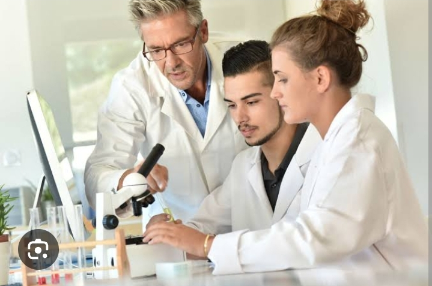

UNIVERSITAS CONTOH
Berita Terkini
Langkah Tiga Sahabat
Di sebuah kampus ternama, Universitas Contoh, tiga sahabat bernama Rika, Nadya, dan Bima menjalani hari-hari mereka sebagai mahasiswa semester awal. Meski berasal dari jurusan berbeda — Raka di Teknik Informatika, Nadya di Ilmu Komunikasi, dan Bima di Arsitektur — mereka dipertemukan lewat organisasi kampus yang sama: Komunitas Inovator Muda.
Tugas Kelompok
Hari itu matahari baru naik sepenggalah, tapi ruang kelas F205 sudah riuh. Dosen mata kuliah Perencanaan Strategis baru saja mengumumkan tugas kelompok: membuat proposal riset selama 3 minggu.
Berita Pendidikan Sarjana Pascasarjana

Program Studi Teknik Sipil
Program studi Teknik Sipil dirancang untuk mencetak lulusan yang mampu membangun infrastruktur berkualitas, seperti jembatan, gedung, dan jalan raya. Mahasiswa dibekali dengan ilmu konstruksi, struktur, hidrolika, dan manajemen proyek.
Program Studi Hukum
Fakultas Hukum Universitas Contoh menawarkan kurikulum komprehensif dengan fokus pada hukum pidana, perdata, tata negara, dan internasional.
Program Studi Sosiologi
Psikologi merupakan bidang ilmu yang mempelajari perilaku dan proses mental manusia. Mahasiswa akan memahami berbagai pendekatan psikologi, mulai dari klinis, perkembangan, sosial hingga pendidikan.
Program Magister Ilmu Komputer
Program Magister Ilmu Komputer fokus pada pengembangan teknologi informasi, kecerdasan buatan, big data, dan keamanan siber.
Program Doktor Ilmu Lingkungan
Program ini bertujuan mencetak akademisi dan peneliti unggul di bidang ilmu lingkungan. Penelitian mencakup pengelolaan sumber daya alam, perubahan iklim, dan kebijakan lingkungan.
Penelitian
Universitas kami terus mendorong inovasi melalui penelitian unggulan dari dosen, mahasiswa, dan pusat studi yang beragam.
Visi & Misi Penelitian
Mewujudkan kampus sebagai pusat penelitian yang unggul dalam pengembangan ilmu pengetahuan dan teknologi demi kemajuan bangsa.
Daftar Kegiatan Penelitian
- Penelitian Dosen: Inovasi Energi Terbarukan
- Penelitian Mahasiswa: Teknologi Pertanian Modern
- Penelitian Lintas Fakultas: Smart City untuk Daerah Terpencil
Publikasi Ilmiah
Pusat Studi & Lembaga Riset
- Pusat Studi Maritim
- Laboratorium Energi Baru dan Terbarukan
- LPPM Universitas Contoh
Hibah dan Program Pendanaan
- Hibah Riset Kemendikbud
- Matching Fund BRIN
- Skema Riset Mandiri Dosen
Berita & Agenda Penelitian
Kolaborasi Riset
Kami menjalin kerja sama dengan berbagai pihak, seperti universitas luar negeri, industri lokal, dan pemerintah daerah untuk memperluas dampak penelitian kami.
Pengabdian
Pengabdian kepada Masyarakat
Pengabdian kepada masyarakat merupakan bagian dari Tri Dharma Perguruan Tinggi yang menjadi komitmen utama Universitas Contoh dalam memberikan kontribusi nyata bagi kemajuan bangsa. Kegiatan ini dilakukan secara berkelanjutan melalui kolaborasi antara dosen, mahasiswa, dan mitra eksternal.
Pemberdayaan UMKM Lokal
Program pelatihan dan pendampingan bagi pelaku UMKM di desa sekitar, bertujuan untuk meningkatkan manajemen usaha dan pemasaran digital.
Penyuluhan Kesehatan Masyarakat
Kegiatan edukasi gizi, sanitasi, dan pencegahan penyakit bagi masyarakat terpencil, bekerjasama dengan dinas kesehatan daerah.
Pengembangan Desa Wisata
Mahasiswa dan dosen lintas disiplin turut serta merancang konsep desa wisata berbasis budaya dan kearifan lokal.